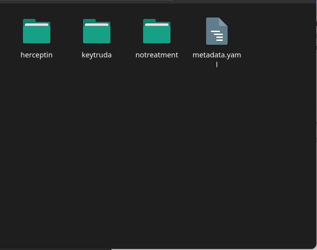

Export your metadata
Once you are happy with the metadata, you can save it again. Ensure to save the metadata file in the root of your data folder.
Your data folder should look like this.
We are finished! When your data is copied and ingested into Instrument Data Service, the metadata file will be examined for a list of data files, how they should be structured, metadata associated with them, and access control properties. If there are any errors or validation problems in the process, you will be notified.
This is the end of this introductory tutorial. Please contact Instrument Data Service for any further questions.